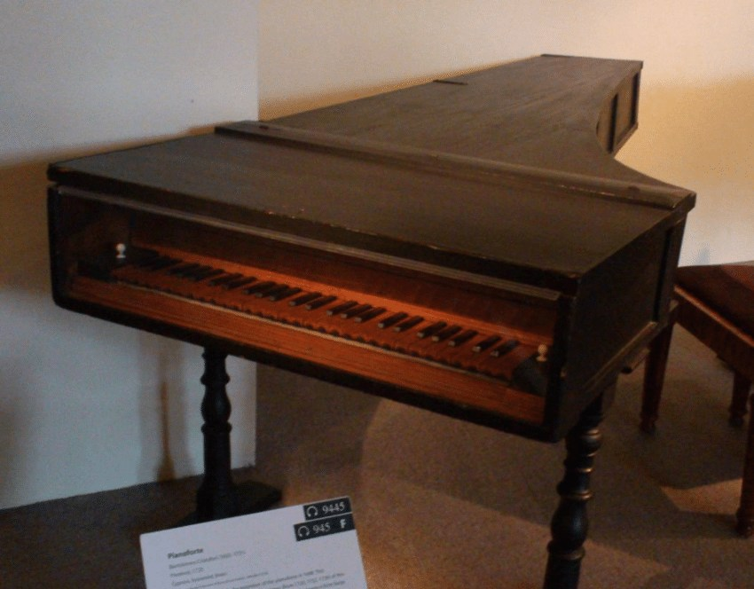
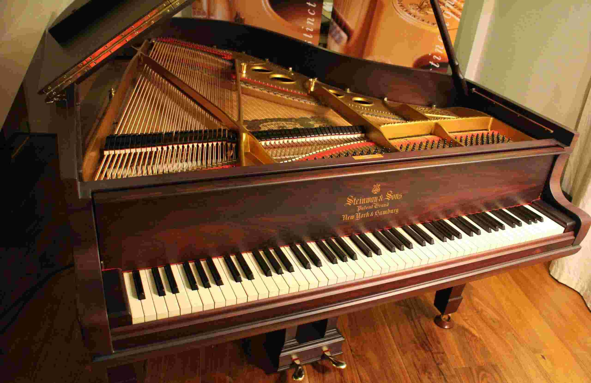

PIANO
Piano, also called pianoforte, French piano or pianoforte, German Klavier, a keyboard musical instrument having wire strings that sound when struck by felt-covered hammers operated from a keyboard. The standard modern piano contains 88 keys and has a compass of seven full octaves plus a few keys.
The vibration of the strings is transmitted to a soundboard by means of a bridge over which the strings are stretched; the soundboard amplifies the sound and affects its tone quality. The hammers that strike the strings are affixed to a mechanism resting on the far ends of the keys; hammer and mechanism compose the “action.” The function of the mechanism is to accelerate the motion of the hammer, catch it as it rebounds from the strings, and hold it in position for the next attack. Modern hammers are covered with felt; earlier, leather was used. The modern piano has a cast-iron frame capable of withstanding the tremendous tension of the strings; early pianos had wood frames and thus could only be lightly strung.
Credit for priority of invention has been much disputed, but there is little doubt that it belongs to Bartolomeo Cristofori (1655-1731) of Italy. Cristofori was unsatisfied by the lack of control that musicians had over the volume level of the harpsichord. He is credited for switching out the plucking mechanism with a hammer to create the modern piano in around the year 1700. The instrument was actually first named "clavicembalo col piano e forte" (literally, a harpsichord that can play soft and loud noises). This was shortened to the now common name, "piano." Cristofori had arrived at all the essentials of the modern piano action by 1726, and it is from Cristofori’s piano that the modern piano stems.